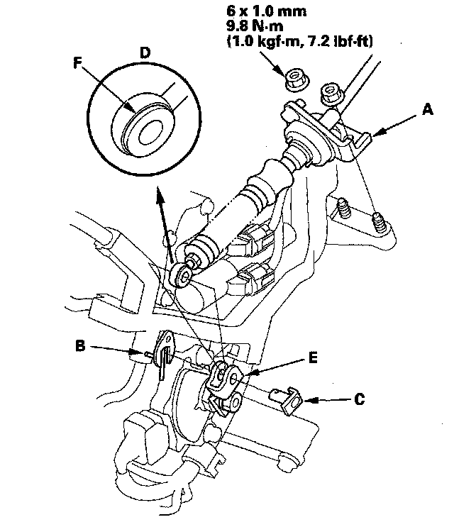
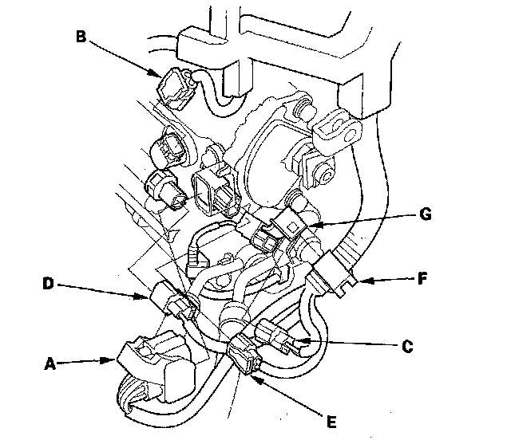
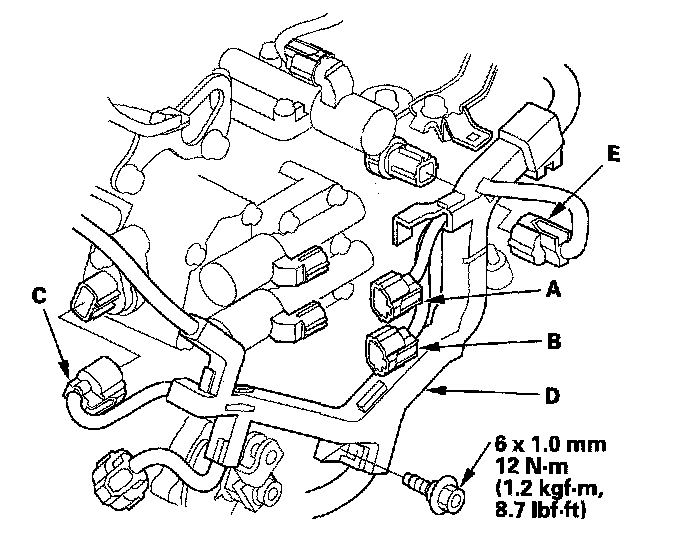
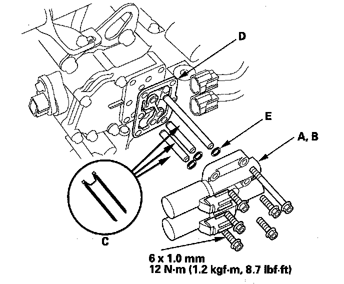

A/T Clutch Pressure Control Solenoid Valve A and B Replacement
A/T Clutch Pressure Control Solenoid Valve A and B Replacement1. Make sure you have the anti-theft codes for the audio system and the navigation system (if equipped).
2. Disconnect the negative terminal from the battery, then disconnect the positive terminal.
3. Remove the battery hold-down bracket, and remove the battery cover, battery, and battery tray.
4. Remove the under-hood subfuse box from its bracket, and remove the bracket from the battery base.
5. Remove the intake air duct and air cleaner housing.
6. Remove the battery base and battery base bracket.
7. Remove the nuts securing the shift cable bracket (A).

8. Remove the spring clip/washer (B) and control pin (C) then separate the shift cable end (D) from the control lever (E).
9. Check the synthetic resin bushing (F) in the shift cable end for a proper fit and wear. If the bushing is loose or worn, replace the shift cable.
10. Disconnect the transmission range switch connector (A) input shaft (mainshaft) speed sensor connector (B) output shaft (countershaft) speed sensor connector (C) 3rd clutch transmission fluid pressure switch connector (D) and ATF temperature sensor connector (E).

11. Remove the harness clamp (F) from the clamp bracket (G).
12. Disconnect the A/T clutch pressure control solenoid valve A connector (A) A/T clutch pressure control solenoid valve B connector (B) and shift solenoid harness connector (C).

13. Remove the bolt securing the harness cover (D) and disconnect the 4th clutch transmission fluid pressure switch connector (E).
14. Remove the A/T clutch pressure control solenoid valve A and B, ATF pipes (C) gasket (D) and O-rings (E).

15. Check the fluid passage of the A/T clutch pressure control solenoid valve for dust or dirt, and clean the passage.
16. Install the new solenoid valve body gasket on the solenoid valve cover, and install the ATF pipes with the filter end in the transmission housing. Install the new O-rings over the ATF pipes.
17. Install A/T clutch pressure control solenoid valve A and B.
18. Secure the harness cover with the bolt.
19. Check the connectors for rust, dirt, or oil, clean, then connect the connectors securely.
20. Apply molybdenum grease to the bore hole of the synthetic resin bushing in the shift cable end, and attach the shift cable end to the control lever, then insert the control pin into the control lever hole through the shift cable end, and secure the control pin with the spring clip/washer.
21. Secure the shift cable bracket with the nuts.
22. Install the battery base bracket and battery base.
23. Install the air cleaner housing and intake air duct.
24. Install the under-hood subfuse box on the battery base, and install the subfuse box on its bracket.
25. Install the battery tray, battery, battery cover, and battery hold-down bracket, then connect battery terminals.
26. Enter the anti-theft codes for the audio system and the navigation system (if equipped). Set the clock.
27. Do the steering column position memorization.
28. Do the power window control unit reset procedure.